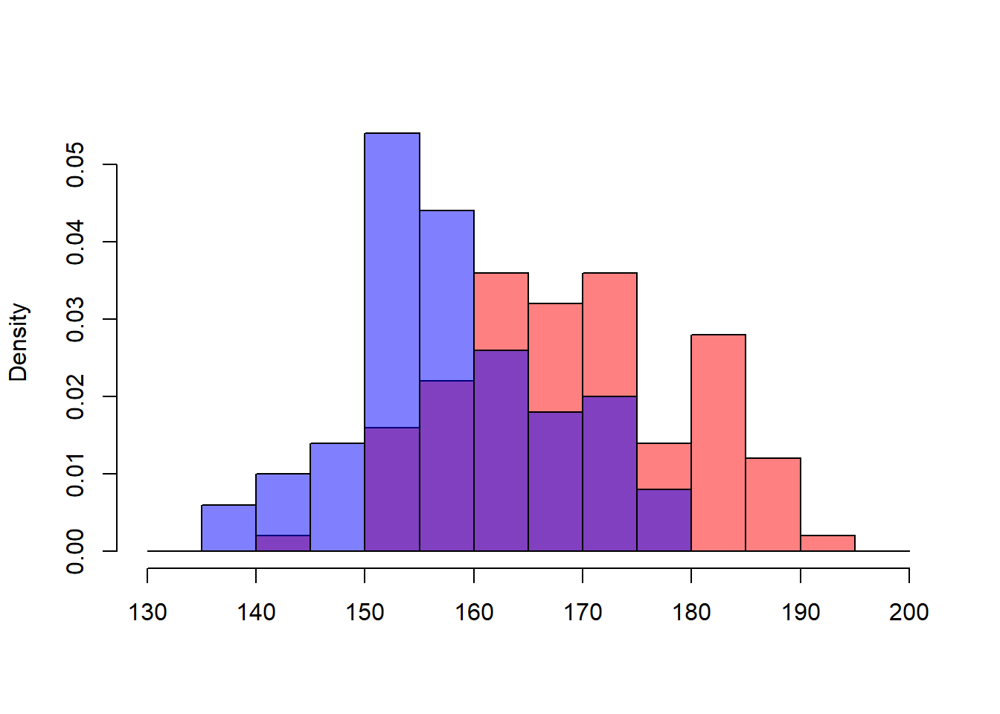
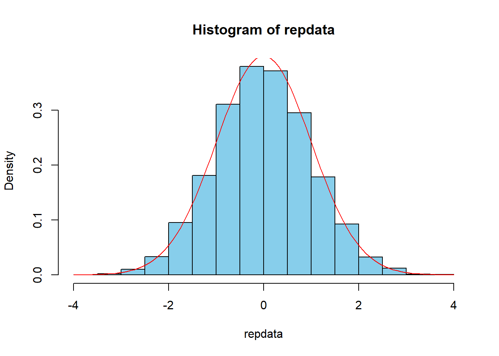
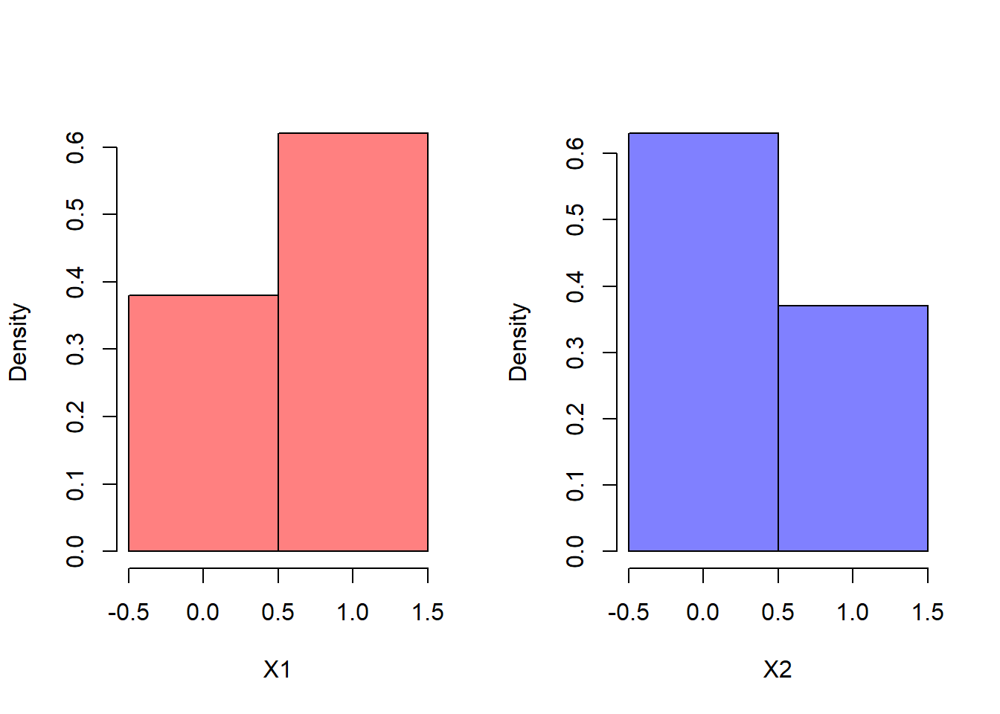

第12章 仮説検定(3): 母平均の差・母比率の差の検定
ここでは，母平均の差・母比率の差の検定を自力で行い，Rの組み込み関数と結果を比較する．
12.1 母平均の差の検定（t検定）
\(X\sim N(170,100)\)と\(Y\sim N(160,100)\)から，それぞれ\(n=100\)のサンプリングデータが得られたとする．
X<-rnorm(100,170,10)
Y<-rnorm(100,160,10)
plotmin<-floor(min(X,Y)/10)*10
plotmax<-ceiling(max(X,Y)/10)*10
Xdens<-hist(X, breaks=seq(plotmin,plotmax,5), plot = FALSE)$density
Ydens<-hist(Y, breaks=seq(plotmin,plotmax,5), plot = FALSE)$density
hist(X,xlim=c(plotmin,plotmax),ylim=c(0,max(Xdens,Ydens)),
breaks=seq(plotmin,plotmax,5),
freq=FALSE,col="#FF00007F", main="", xlab="" )
hist(Y,xlim=c(plotmin,plotmax),ylim=c(0,max(Xdens,Ydens)),
breaks=seq(plotmin,plotmax,5),
freq=FALSE,col="#0000FF7F",add=T)
帰無仮説 \[H_0: \mu_1 = \mu_2\] のもとでの\(t\)値を算出する関数を定義する． \[t=\frac{\bar{X}-\bar{Y}}{S\sqrt{\frac{1}{n}+\frac{1}{m}}}\] \[S=\sqrt{\frac{(n-1)S_X^2+(m-1)S_Y^2}{n+m-2}}\]
\(H_0\)のもとでの\(t\)値．
t<-function(data1,data2) {
n<-length(data1)
m<-length(data2)
s<-sqrt(((n-1)*var(data1)+(m-1)*var(data2))/(n+m-2))
(mean(data1)-mean(data2))/(s*sqrt(1/n+1/m))
}
tstat<-t(X,Y)
tstat## [1] 8.062544標準正規分布を仮定したときの\(p\)値．
## [1] 6.661338e-16\(t\)分布\(t(n+m-2)\)を仮定したときの\(p\)値．
## [1] 6.972201e-14t.test関数を使って同じことをする．
##
## Two Sample t-test
##
## data: X and Y
## t = 8.0625, df = 198, p-value = 6.977e-14
## alternative hypothesis: true difference in means is not equal to 0
## 95 percent confidence interval:
## 8.615876 14.195249
## sample estimates:
## mean of x mean of y
## 169.4667 158.0612\(t\)値ならびに\(t\)分布を仮定したときの\(p\)値が一致していることが確認できる．
帰無仮説帰無仮説 \(H_0: \mu_1 = \mu_2\)のもとでの\(t\)値の分布を確認する．
repdata<-replicate(10000,t(rnorm(100,165,10),rnorm(100,165,10)))
hist(repdata,col="skyblue", prob=TRUE)
curve(dnorm(x,0,1),-4,4,col="red",add=TRUE)
帰無仮説\(H_0: \mu_1 = \mu_2\)のもとで\(t\)値として8.0625444のような値が得られることはほとんどない．
## [1] 012.1.1 母比率の差の検定
ベルヌーイ分布\(X_1\sim Bi(1,0.6)\), \(X_2\sim Bi(1,0.4)\)から，それぞれ\(n=100\)のサンプリングデータが得られたとする．
X1<-rbinom(100,1,0.6)
X2<-rbinom(100,1,0.4)
par(mfrow=c(1,2))
hist(X1,xlim=c(-0.5,1.5),breaks=seq(-0.5,1.5,1),
freq=FALSE,col="#FF00007F",main="")
hist(X2,xlim=c(-0.5,1.5),breaks=seq(-0.5,1.5,1),
freq=FALSE,col="#0000FF7F",main="")
帰無仮説 \[H_0: p_1-p_2=0\] のもとでの\(z\)値を算出する関数を定義する． \[z=\frac{\hat{p}_1-\hat{p}_2}{\sqrt{\hat{p}(1-\hat{p})\left(\frac{1}{n_1}+\frac{1}{n_2}\right)}}\] \[\hat{p}=\frac{n_1\hat{p_1}+n_2\hat{p}_2}{n1+n2}\] 帰無仮説のもとでの\(z\)値．
z<-function(data1,data2) {
n1<-length(data1)
n2<-length(data2)
p<-(n1*mean(data1)+n2*mean(data2))/(n1+n2)
(mean(data1)-mean(data2))/sqrt(p*(1-p)*(1/n1+1/n2))
}
zstat<-z(X1,X2)
zstat## [1] 3.535711標準正規分布を仮定したときの\(p\)値．
## [1] 0.0004066798prop.test関数を使って検定．ただし，prop.testでは，zstat^2がカイ二乗分布\(\chi^2(1)\)に従うことを利用して検定している．
##
## 2-sample test for equality of proportions without continuity
## correction
##
## data: c(sum(X1), sum(X2)) out of c(length(X1), length(X2))
## X-squared = 12.501, df = 1, p-value = 0.0004067
## alternative hypothesis: two.sided
## 95 percent confidence interval:
## 0.1158176 0.3841824
## sample estimates:
## prop 1 prop 2
## 0.62 0.37## [1] 12.50125## [1] 0.0004066798